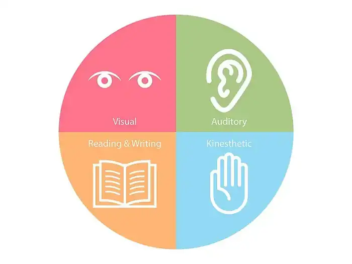
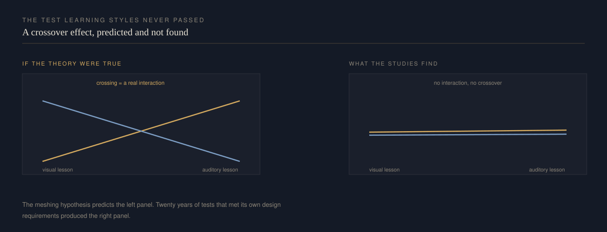

The claim, stated fairly
People differ in how they prefer to take in information. The pedagogical claim goes further: matching the teaching method to a student's preferred modality improves how much they learn. This is the meshing hypothesis, and it is the part that has been tested.
Maps, diagrams and images



What a valid test requires
Three things at once. Students must be sorted by style using a validated instrument. They must then be taught the same material in two different ways. And the outcome must show a crossover: the visual learners do better with the visual lesson, the auditory learners better with the auditory one, in a pattern that cannot be produced by general ability.
Almost no study does all three. A 2008 review commissioned by the Association for Psychological Science found a handful that came close, and none that produced the crossover. Where the design was sound, the interaction disappeared.
Why the belief survives
It feels true, because people do have preferences, and preferences are easy to observe. It is also commercially useful: the VARK questionnaire and its relatives are sold to schools, and a teacher who has spent a training day on it has a stake in the answer. In one survey of teachers in five countries, more than nine in ten endorsed matching instruction to learning styles.
The preference is real. The benefit of matching it is not. Those are different sentences and only the first is supported.
Retrieval practice: testing yourself on material, rather than rereading it. Among the largest and most replicated effects in the learning literature.
Spacing: the same study time distributed across days beats the same time in one block.
Interleaving: mixing problem types forces the learner to choose a method, not just apply one.
Dual coding: pairing words with a relevant diagram helps almost everyone — which is not the same as matching a style, and is often mistaken for it.
The lesson for the archive
A debunked idea is not a stupid one. Learning styles were a reasonable guess about individual difference, and they were killed by a specific experimental requirement rather than by ridicule. That is how the four labels here are supposed to work.
Sources for this page
- Wikipedia, “Learning styles” — models, history and criticismen.wikipedia.org
- Pashler et al. (2008), Psychological Science in the Public Interest — the reviewdoi.org
- Dekker et al. (2012), Frontiers in Psychology — teacher beliefs about neuromythsdoi.org
- Wikipedia, “Testing effect” — retrieval practice evidenceen.wikipedia.org
Open resources on this topic
- Book5. IJHSS EFFECT OF ACHIEVEMENT MOTIVATIONON LEARNING STYLES — IASET JOURNALS · 2016 (Internet Archive, free to read)
- BookExtracting learning styles from social/cultural diversity : a study of five American minorities — Morris, Lee · 1978 (Internet Archive, free to read)
- BookPractical approaches to using learning styles in higher education — 2000 (Internet Archive, free to read)
- PapersOpen-access articles: DOAJ · PubMed Central · Internet Archive Scholar
- BooksPublic-domain and borrowable copies: Open Library · Project Gutenberg · Google Books
Cite this page
Momin, S. (2026). Learning Styles. The Larger World Archive. https://drsamonline.github.io/LARGE_GLOBE/learning-styles.htmlMomin, Sohil. “Learning Styles.” The Larger World Archive, 2026, https://drsamonline.github.io/LARGE_GLOBE/learning-styles.html.Momin, Sohil. “Learning Styles.” The Larger World Archive, 2026. https://drsamonline.github.io/LARGE_GLOBE/learning-styles.html.@misc{learning2026learning,
author = {Momin, Sohil},
title = {Learning Styles},
year = {2026},
howpublished = {The Larger World Archive},
url = {https://drsamonline.github.io/LARGE_GLOBE/learning-styles.html},
note = {Last reviewed 20 November 2026}
}Last reviewed 20 November 2026 · Corrections policy · this page is not peer reviewed